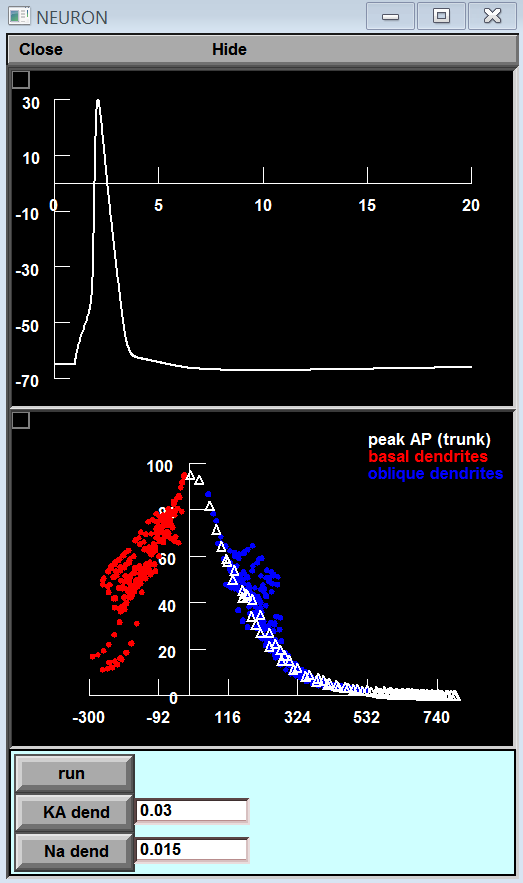

Model files for the Springer Encyclopedia of Computational Neuroscience
entry "Action potential Back-Propagation"
by Sonia Gasparini and Michele Migliore.
The model shows how the back-propagation of action potentials
in the dendrites of CA1 pyramidal neurons is modulated by
active conductances and synaptic inputs.
The simulation file springer-bAP.hoc reproduces Fig.2 of the entry:

A somatic AP is first elicited with a short current pulse.
Its peak amplitude as it backpropagates into the dendritic tree
is shown in the bottom panel at the end of the simulation.
Users can set the somatic peak conductance of the Na and KA currents
to see their effect on the AP backpropagation.
springer-bAPsyn.hoc reproduces Fig.4 of the entry:
A somatic AP and a synaptic input are elicited with a relative delay.
The simulation shows the local mebrane potential of an oblique dendrite
at about 400 um from the soma under two different conditions:
(white) synaptic input is activated after the AP.
(red) synaptic input is activated before the AP.
Users can set the relative delay (in ms)
to see its effect on the local membrane potential.
Under unix systems:
to compile the mod files use the command
nrnivmodl
and run the simulation file with the command
nrngui filename
Under Windows systems:
to compile the mod files use the "mknrndll" command.
A double click on a simulation file
will open the simulation window. If you need more help running the model please consult this page:
https://senselab.med.yale.edu/ModelDB/NEURON_DwnldGuide
Questions on how to use this model
should be directed to michele.migliore@cnr.it